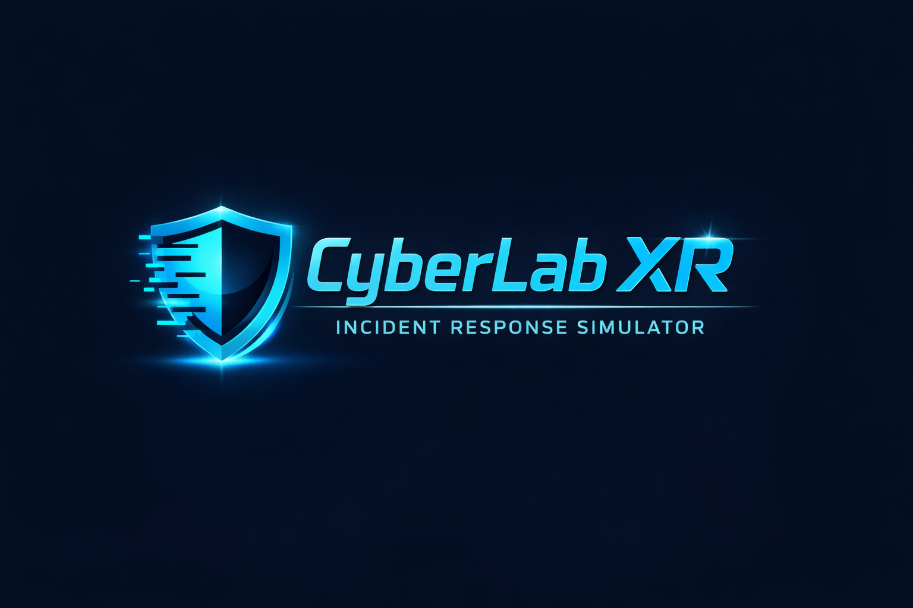

Virtuálny Security Operations Center pre výuku kybernetickej bezpečnosti. Realistické simulácie incidentov v priestorovom XR prostredí, presne ako v skutočnej praxi.
Existujúce platformy ako TryHackMe alebo HackTheBox sú výborne navrhnuté, ale sú to 2D terminály. XR pridáva priestorovú orientáciu, rôzne monitory, servery a logy existujú vo fyzickom priestore, čo trénuje aj situational awareness, nielen technické znalosti. Vizualizácia útoku ako 3D grafu siete je intuitívnejšia ako tabuľka IP adries. Mozog navyše využíva priestorovú navigáciu na organizáciu informácií, čo je základ Loci metódy (pamäťový palác).
Fyzický pocit z práce v SOC buduje reflexy a stresovú odolnosť, ktoré 2D terminál nedokáže nasimulovať.
Sieťový útok ako interaktívny 3D graf, nie tabuľka IP adries v spreadshete. Tímová VR session simuluje fyzickú koordináciu.
Navrhnuté pre školy, dostupné licencie, slovenský a český jazyk, žiadna zbytočná hardvérová bariéra.
Navrhnúť architektúru XR simulátora bezpečnostných incidentov a definovať VR/XR subsystémy. Špecifikovať 5 scenárov s workflowom pre každú rolu. Prístupné riešenie bez vysokej hardvérovej bariéry so MoSCoW prioritizáciou a realistickým roadmapom.
Priesečník troch oblastí, ktoré nás spájajú: kyberbezpečnosť, vzdelávanie a imerzívne technológie. Téma priamo zapadá do sylabu predmetu, využíva vizualizačný, kinematický, akustický aj interakčný podsystém. Podľa ENISA chýba v Európe stovky tisíc špecialistov na kyberbezpečnosť.
Bc. a Mgr. študenti informatiky, aplikovanej informatiky a kybernetickej bezpečnosti. Vyučujúci predmetov zameraných na sieťovú a informačnú bezpečnosť.
Študenti IT odborov na SPŠ a odborných školách. Učitelia informatiky hľadajúci interaktívny spôsob výuky kyberbezpečnosti.
Členovia Capture the Flag tímov, kyberbezpečnostné krúžky, účastníci hackathonov hľadajúci realistickejšie tréningové prostredie než klasické CTF platformy.
Sekundárna skupina: spoločnosti prevádzkujúce vlastný alebo outsourcovaný SOC. Onboarding juniorných analytikov bez rizika na produkcii.
| Platforma | Typ | VR / AR | Sim. incidentov | Reálny čas | Tím | SK/CZ | Školy |
|---|---|---|---|---|---|---|---|
| CyberLab XR | XR simulátor | ✅ | ✅ | ✅ | ✅ | ✅ | ✅ |
| TryHackMe | Web platforma | ✕ | ⚠ | ✕ | ⚠ | ✕ | ⚠ |
| HackTheBox | Web platforma | ✕ | ⚠ | ✕ | ✅ | ✕ | ✕ |
| Cyberbit Range | Enterprise sim. | ✕ | ✅ | ✅ | ✅ | ✕ | ✕ |
| IBM QRadar SIEM | Profesionálny nástroj | ✕ | ✅ | ✅ | ✅ | ✕ | ✕ |
| CyberStrike VR | VR hra | ✅ | ✕ | ⚠ | ✕ | ✕ | ✕ |
| SANS Cyber Ranges | Školenie | ✕ | ✅ | ✅ | ⚠ | ✕ | ✕ |
Každý typ incidentu má odlišný postup riešenia, vlastné logy a stopu, iný časový tlak a rôznu závažnosť alertov (Medium, High, Critical). Systém hodnotí rýchlosť reakcie, správnosť rozhodnutí a minimalizáciu škôd na simulovanej sieti. Role v každom scenári: Analyst, Forensics Specialist, Incident Handler, Admin.
Priestorovo rozmiestnené monitory, servery a dashboardy. Každá obrazovka zobrazuje iný nástroj: SIEM panel, 3D Network Map, Log Viewer, Ticket System, Team Status. Presne ako v reálnom Security Operations Centre.
Každý incident má časomíeru. Skóre závisí od rýchlosti reakcie (MTTD 30 %), správnych rozhodnutí (40 %) a minimalizácie škody na simulovanej infraštruktúre (30 %).
2 až 4 študenti v jednom virtuálnom SOC, každý s inou rolou. Reálna tímová koordinácia pod tlakom, priestorový hlasový chat a shared state: ak Analyst označí alert, Incident Handler to okamžite vidí.
Po skončení simulácie aplikácia prehráva útok krok za krokom v 3D priestore, vizualizuje kde nastali chyby pomocou zelených a červených značiek na časovej osi. Export reportu ako PDF pre hodnotenie učiteľom.
Vizualizácia výstupov z Wireshark, nmap, Splunk v 3D priestore namiesto 2D terminálu. SIEM simulátor generuje realistické logy vo formáte Splunk alebo QRadar. Priamy prenos zručností do praxe.
Plná podpora slovenčiny a češtiny vrátane odbornej terminológie, nápovedy a debriefingových správ. Možnosť prepnutia do angličtiny pre prípravu na medzinárodné certifikácie.
Instruktorský dashboard pre učiteľa v reálnom čase, companion režim pre študentov (cheat-sheet, materiály) a observer mód pre spolužiakov bez headsetu.
Foveated rendering pre vyšší výkon a analýza pohľadu v debriefingu, ktoré monitory študent kontroloval ako prvé. Dostupné na Meta Quest Pro a PSVR2.
Klasifikácia útokových techník. Inšpirácia pre priebeh scenárov, časové osi útokov a kategorizáciu alertov v SIEM simulátore.
Metodika fáz incident response. Základ pre roly, workflow a hodnotenie správnosti rozhodnutí v simulátore.
Technický štandard pre multiplatformovú podporu VR/XR zariadení v Unity. Umožňuje súčasné nasadenie na Meta Quest, PC VR a AR zariadeniach.
Referenčná dokumentácia pre parametre Meta Quest 3, hand tracking, foveated rendering a výkonnostné odporúčania pre VR aplikácie.
Žiadna existujúca platforma nespája VR prostredie s realistickou simuláciou incidentov a zároveň prístupnosťou pre školy. CyberLab XR je jediná, kde študent fyzicky sedí v SOC a v reálnom čase rieši útok s tímom, pod tlakom, s nástrojmi z praxe.